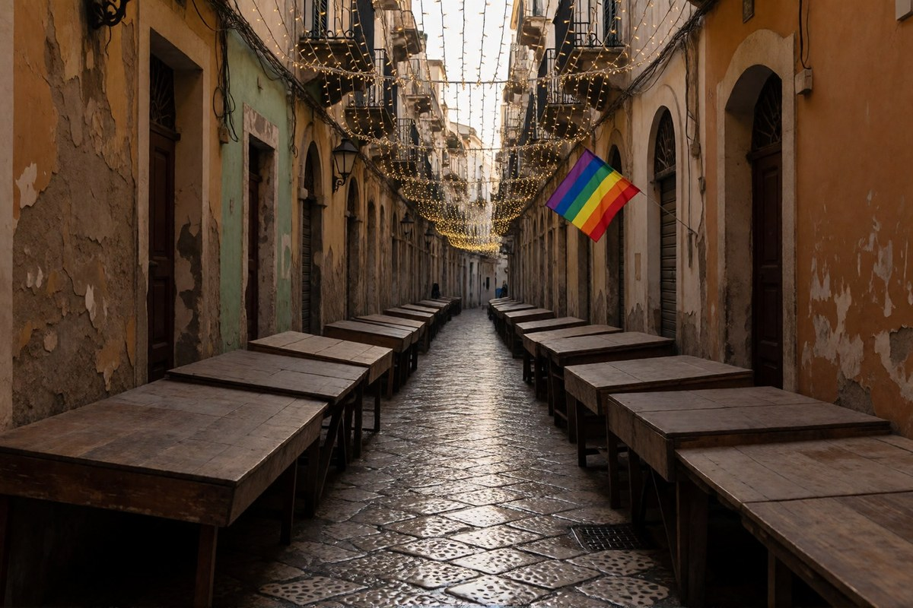

Sicilia · 25 novembre 2026
Palermo, il Comune blocca il villaggio di Natale della Vucciria

Due assessori dicono no all'iniziativa annunciata in via Argenteria dal 1° dicembre: manca l'autorizzazione, e per uno dei due si tocca un simbolo della tradizione. L'organizzatore parla di omofobia e annuncia che gli eventi si faranno nei locali.
di Franco Zanghì
Un villaggio di Natale con un Babbo Natale che si definisce gay, alla Vucciria. Il Comune di Palermo lo ha bloccato, e intorno a quel no è nato uno scontro politico.
Mercoledì 25 novembre 2026 due assessori della giunta hanno detto no alla manifestazione annunciata dal 1° dicembre al 6 gennaio, con gli stand e, tra gli stand, il personaggio che ha dato il nome alla polemica. Lo ha riferito l'ANSA.
Giuliano Forzinetti, assessore alle Attività produttive, ha spiegato che non è stata rilasciata nessuna autorizzazione e ha parlato di «manifestazione abusiva».
Le ragioni del no
Antonio Rini, assessore alla Cultura, è andato oltre il piano amministrativo: «Fino a quando guiderò l'assessorato, il Comune non darà mai l'ok a iniziative che snaturino il significato dei simboli della nostra tradizione». E ha aggiunto: «I diritti vanno rispettati, ma le tradizioni non si possono assolutamente profanare».
Il villaggio era previsto nella cosiddetta Gay Street della Vucciria, in un tratto di via Argenteria chiuso alle auto. Il Babbo Natale sarebbe stato un palermitano, il primo vincitore italiano di un concorso di bellezza per uomini omosessuali.
La replica dell'organizzatore
L'organizzatore è il regista e attore Maximo De Marco, e la sua risposta è secca: «Certi politici di destra si sono scagliati su un semplice Babbo Natale, solo perché si è autodefinito un Babbo Natale gay. È la conferma che viviamo in un Paese omofobo».
Sull'accusa di abusivismo contesta il presupposto: non c'è occupazione di suolo pubblico, dice, e non si tratta di una manifestazione a pagamento, perché gli eventi si svolgeranno dentro i locali della Gay Street. A PalermoToday ha aggiunto un'accusa più diretta, sostenendo che il Comune preferisca una Vucciria lasciata al degrado.
La polemica era partita già martedì. Il deputato regionale Gianfranco Miccichè aveva chiesto di fermare l'iniziativa, definendola un regalo politico agli avversari sul terreno dei valori. Lo ha scritto la Gazzetta del Sud.
Come la vedo io
Qui si sono incrociate due questioni diverse, e conviene tenerle separate. Una è amministrativa: se un'autorizzazione serve e non c'è, il Comune fa il suo lavoro quando lo dice. L'altra è politica, e riguarda la frase sui simboli della tradizione, che a un ufficio comunale non compete.
Perché su quel terreno la discussione diventa un'altra, e molto più grande: chi decide che cosa snatura una tradizione. Un quartiere che per mesi chiede sicurezza e servizi, e si ritrova al centro di una contesa su un travestimento, è un quartiere di cui si parla ancora una volta per il motivo sbagliato.
Fonti
- ANSA Sicilia, «Villaggio per le feste con Babbo Natale gay, Comune blocca iniziativa», 25 novembre 2026
- Giornale di Sicilia, «L'assessore Forzinetti: il villaggio a Palermo con Babbo Natale gay non è autorizzato», 25 novembre 2026
- PalermoToday, «Babbo Natale gay alla Vucciria, per il Comune è abusivo», 25 novembre 2026
- LiveSicilia, «Babbo Natale gay a Palermo, Rini: no al villaggio alla Vucciria», 25 novembre 2026
- Sky TG24, «Palermo, Villaggio di Babbo Natale Gay alla Vucciria: per il Comune è abusivo», 25 novembre 2026
- Gazzetta del Sud, per la richiesta del deputato regionale del 24 novembre 2026
Alla data di pubblicazione non risulta un provvedimento formale di divieto reso pubblico: le dichiarazioni dei due assessori sono state rese alle agenzie e alle testate. Resta controverso fra le parti se l'iniziativa richiedesse un'autorizzazione, perché il Comune parla di manifestazione e l'organizzatore di eventi dentro locali privati. Il nome del Babbo Natale annunciato non viene riportato, perché si tratta di un privato cittadino estraneo alla contesa amministrativa. Non risultano dichiarazioni del sindaco di Palermo.